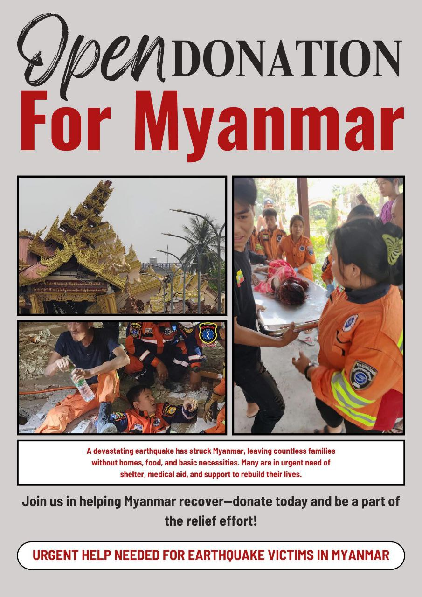
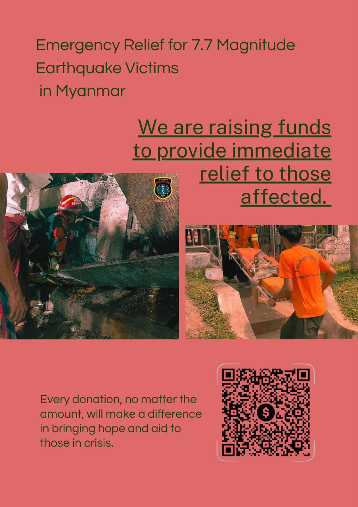

Fundraising by DISP Scholars at AUPP
for Earthquake Victims

After a devastating 7.7 magnitude earthquake struck Myanmar, hours later, we DISP scholars gathered and asked, "What are we going to do?" Some of our friends were crying because their families live in Mandalay.At that time, our DISP scholars group at AUPP decided to do the best we could to organize a donation event for those affected. As Myanmar scholars studying abroad, we could not assist on the ground, but we will do our best to support donation efforts. Our team also includes a musician artist named John Derek, who has a large following on his social media platforms and can reach out to many people. In addition, he is a well-reputed singer who has been an artist who opposes the military regime and stands on the side of justice, and has also held many donation events. Therefore, we decided to make the donation with great enthusiasm and care. In addition to the donation event, since the Khmer Songkran celebration on campus was approaching, we decided to hold a donation drive and sell Myanmar traditional juice to raise funds. Since then, our group DISP scholarship from AUPP which are 13 students, received donations from Thailand and Cambodia for the earthquake relief from March 29 to April 3.
I, Saw Kler Doh Shee, Maung Min Thant Htun, Khu Eugene, Saw Aung Myint Nyein, Sarah Mai are responsible for collecting donations in person and online. John Derek is responsible for communicating donation updates through his social media. Aye Myat Mon, Su Myat Kaythari, Nin Yandanar Htet Htet Tun, Lin Thu Thu Tun, Ma Htet Nyein Khant, and Ma Suyee worked diligently to systematically keep records of the incoming and outgoing donations, where they were going to donate, and where they had donated. We took great care to ensure transparency around the funding of a fundraising event. Women played a very important role in this donation. When a large amount of donations came in unexpectedly, the girls took care of the accounting. As a result, people gained their trust and donated more. I gained a lot of experience at that donation event and was particularly amazed by the women's ability to do so. Without them, it would have been very difficult to keep our records and exchange money. This donation event was a good deed for us before we parted ways. At this time, We all knew that we would lose our scholarship and have no future, and that we would be separated in a month or two, but we forgot about that and put in all our efforts to organize the donation event. That event was a moment I will never forget because it was a small action that had a big impact.
Below is a list of our
donations
Myanmar Kyat - 1,526,680 Kyat
Thai Baht - 151,709 Baht
US Dollar - 2351.08 USD
If you would like to review the list of all donors, you may find the donation records here:
View Donor
List.
From the following, donations were sent to the following individuals, teams, or organizations:
• Sky Villa Rescue Team - 1,000,000 MMK (for emergency rescue efforts)
• Si Thu (Sagaing Region) - 2,000,000 MMK (for local support in Sagaing)
• Clean Yangon - ฿20,000
• Sue Zin - 300,000 MMK (for 30 dead body bags)
• Myo Myint Thu & JK Logistics - ฿20,000 (used to purchase and deliver food from Thailand to Sagaing
due to local shortages and
financial withdrawal issues; equivalent to 20,0000 Baht)
• Kay Lar Volunteer Team (Ko Kyaw Zin Oo) - 1,000,000 MMK (Inlay region)
• Sue Zin - 850,000 MMK (for 100 dead body bags delivered to Sagaing)
• Ma Phoo (Sagaing 96) - 1,000,000 MMK
• Fountaw U Monastery (Mandalay) - 1,000,000 MMK
• Ma Nway Nway (Pyawbwe) - 300,000 MMK
• Ma Kyi Sint Sant (Amarapura) - 500,000 MMK
• Ko Si Thu and Team (Sagaing) - 2,000,000 MMK
• Clean Yangon - 16,550 THB
• Aye Yu Myat (Mandalay - Water donation) - 500,000 MMK (for providing clean water)
• Ko Nay Shine (Sagaing) - 1,000,000 MMK
• Ma Shwe Yee Htun - 1,000,000 MMK (to deliver medicines to Sagaing)
• Bamboo Delight Library and Summer School (Inlay region) - 1,000,000 MMK
• Dr. Kyaw Min Htet (Sagaing) - 2,000,000 MMK (for medical supplies and services on the ground)
• Myanmar Muslim Aid (MMAID) - 2,350,000 MMK
• Families of Myanmar student soldiers affected by the earthquake - 4,408,400 MMK
All donations listed above have already been successfully delivered.
To see where the all donations were allocated, please refer to this post:
View Allocation
Records.
"ပြည်သူ့အတွက် ပြည်သူရှိမယ်"